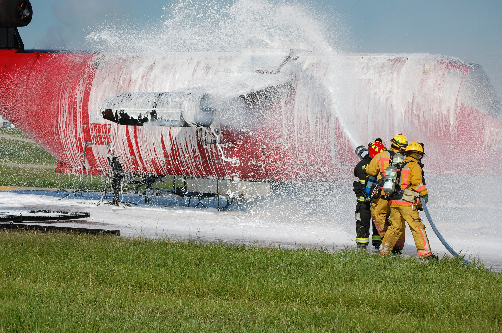

Portfolio and Case Studies
Practical solutions for everything water.


Climate Change Adaptation, Flood Risk, and CSO Prediction
A startup needed a model to estimate pipe surcharging in stormwater and combined systems. Aaron's model provided at least six hours advance notice of flooding and Combined Sewer Overflows.
Water Quality
Think most NOVs come from an MCL violation? Think again. The biggest challenge for Water Quality professionals is
sometimes just knowing when to sample.
See how Aaron helped a large utility organize and track all their sampling requirements in one place.

Asset Management
How do utilities decide when to replace the billions of dollars of pipe, valves, hydrants, meters and treatment equipment
under an organized Length-of-Service (LOS) plan while still ensuring affordability in their rate case?
See how Aaron helped a utility decide when it was cost-effective to remove malfunctioning equipment.
Non-Revenue Water
A large water utility needed help uncovering anomalies in residential water meter billing. See how Aaron devised a sampling plan to help target malfunctioning meters and reduce NRW.

PFAS Sampling Plans
A large utility needed help identifying key target areas in preparation for forthcoming federal regulations. See how Aaron anaylzed occurence data and helped devise a sampling plan for key PFAS pilot projects.
IoT for SCADA Systems
See how Aaron helped a drinking water treatment plant optimize its treatment processes by analyzing real-time SCADA data fed to a data lake via Message Queuing Telemetry Transport (MQTT).